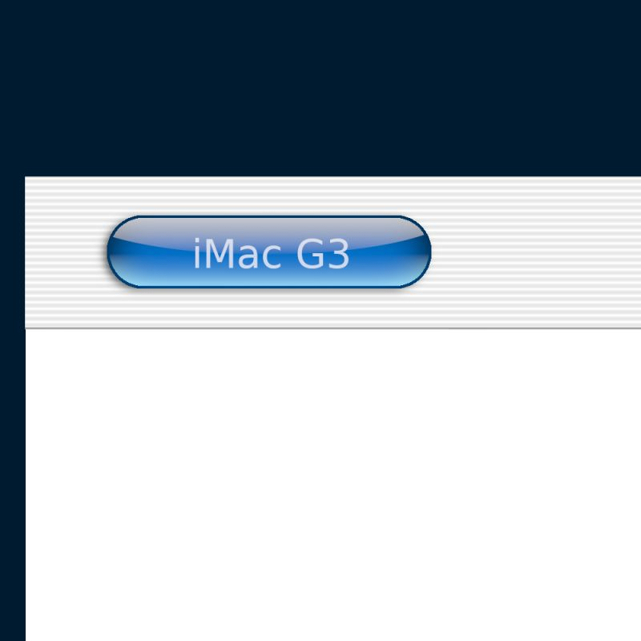
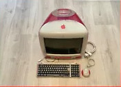
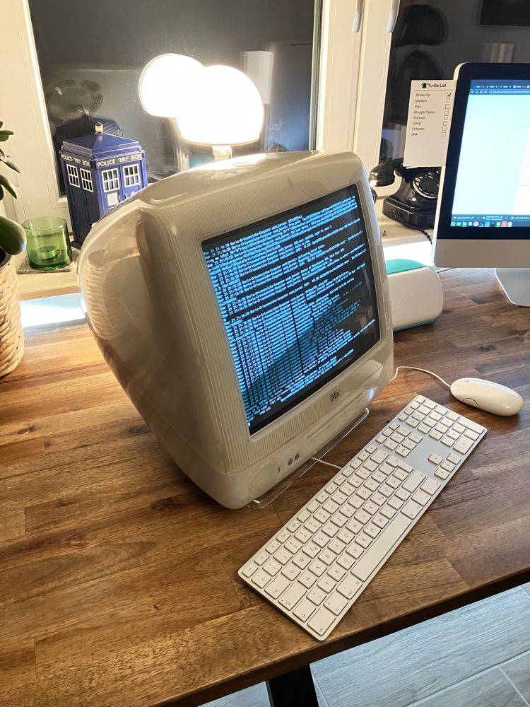
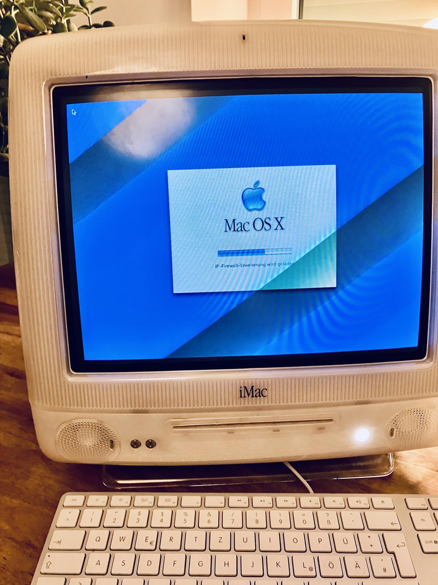
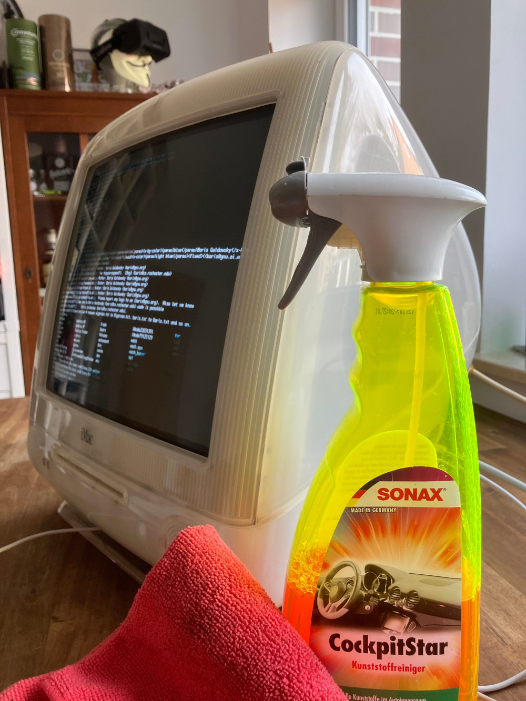

| Blog |
2023/03/22 I made a website from 1999Working with this iMac i remembered, how much I love the Glass Design of OS X back then. I spent days experimenting with photoshop to figure out how they did that. This glass style was a completely new thing. Never seen before. So many of us web designers tried to re create this. So today I opened gimp to see if I can still pull this off. I like the image!Doing this made me think of all the good times when I started my real professional webdesign career in 1999 with Steffen Rolla. In memory of that I created this web site (your currently looing at it) using the old apple design on the late 1990ies and early 2000nds. And for the good old times I coded this website in an old-school table layout in HTML 3.2. Yes, it has FONT tags and they still do. Fun fact. Marquee tags still work too. Just blink tags wont. Miss them 2023/03/22 I just bought another iMacDear I have a crush on these iMacs. I just bought one for 150 in red. I hope I can use the disk or hard drive to get my first one running. So excited. It will arrive in 2-3 days!!!2023/03/22 I'm stuck!!!I could boot into my user but all the program icons in the doc showed [?]. I rebootet and got stuck. Instead of the login screen I get a white screen with just a working mouse arrow. I tried a lot. Bottet into the console. Looked at the system.log Tried to figure out how to fix it. Searched the internet. This sucks. Eventually I found old blank CDs, downloaded the OS X 10 Pather boot disc and burnt one. But no luck. When I try to boot from the disc, it just updates the boot selection dialoge and the CD option is gone. I guess the disc drive doesnt work so well any more. It also wont eject the disc. Seems I turned the disk drive into a read only memory. ^^.+++ PLS HELP +++ Seriously. Anyone who knows BSD or OSX. I need to find out why it halts. Or a better option. Any ideas welcome. 2023/03/21 Turning it on for the first timeIt works! There is the startup sound. It takes an eternity to boot up. But then... Mac OS X is already installed! Originally these came with OS 9. And a login screen with the name of a person I don't know with the password I don't know. Found out how to boot it to the console and create a new user. This starts the registration dialog with famous music! I mean not a chimne or a sound. Real music. And it's cool until today.2023/03/21 It beginsI'm pinned down with corona and already bored to death after staying in bed a whole day. Eventually I took this iMac from the cellar. I got it from a friend. It was sitting there for months, waiting for me in his nicotine stained, cough drop colour housing.Cleaning it is a blast. I disassembled it completely watching different videos ffor guidance. Ibroke almost nothing. Just a bit of the screw covers. They break sooo easily. In my desperation I sprayed it with the SONAX Cockpit Star I picked up at the gas station years ago. It costed a fortune and never worked. It never worked because this is really good at removing nicotine and I don't smoke. The speakers are not working. The foam ring holding the membrane turned into a gunk that smears like old wet liquorice. I have to repair this later. Unfortunately I didnt make pictures of the cough drop yelloy before. But the after overwhelmed me. It looks brand news. A beautiful piece of tech. |